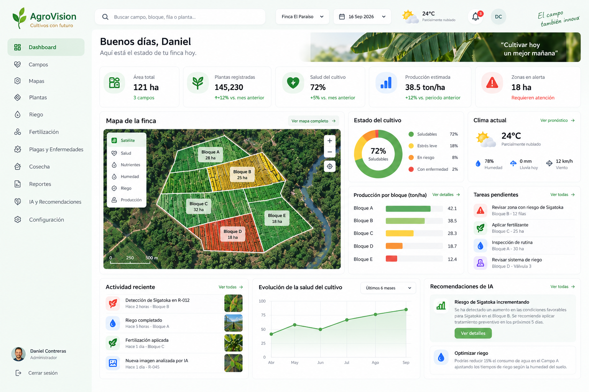
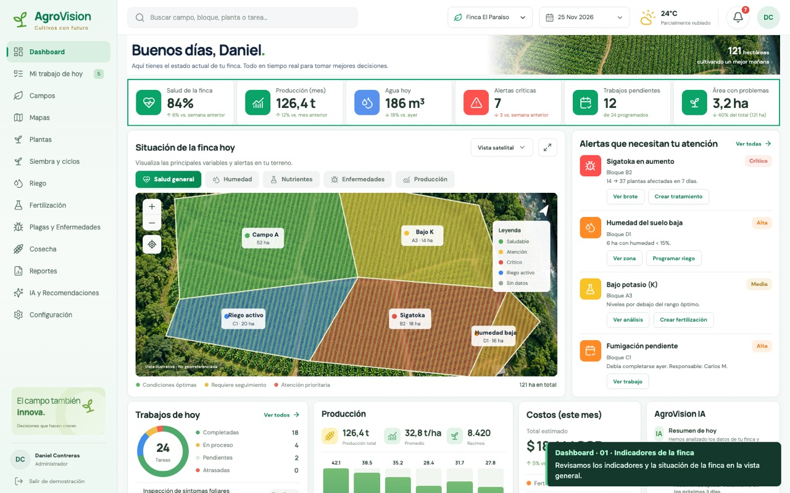

Product · design · implementation · field operations
A clear view of the whole system.
A curated guide to Agro Core and AgroVision. Browse the implementation, architecture, requirements, agronomic references, and workflows as individual chapters, each with its own table of contents.
System at a glance
Architecture and implementation flow
The browser experience calls farm-scoped APIs, which run agricultural workflows and store operational and spatial records.
01 · Web client
AgroVision
React · TypeScript · ViteDemonstration mode or authenticated farm workspace02 · Application API
Agro Core
Spring Boot · Java 17 · RESTSessions · CSRF · farm-scoped permissions03 · Domain workflows
Agricultural modules
Farms · tasks · planting · irrigationFertilization · inspections · harvest · analytics04 · Persistence
PostgreSQL + PostGIS
JPA + Hibernate Spatial · Flyway migrationsOperational records · spatial data · photosDemo mode is visibly labeled and isolated in browser storage. Real mode uses session-based authentication and farm records. See the overview guide for implementation detail and the original relationship, sequence, architecture, and component diagrams.
The dashboard is the entry point for the browser workflows described here. See the Dashboard section for the administrator view, implemented features and test evidence.




Explore the chapters
Project documentation
Every maintained Markdown guide is included in full. Pick a chapter below, or use the sidebar search to jump directly to a matching section.
Project overview
1 guideRequirements and design
3 guidesAgro Core System Requirements
Functional and non-functional requirements, implementation status, security boundaries, and farm authorization model.
Guide 03Crop Management Requirements Audit
Crop catalog, planting, crop-cycle coverage, endpoint inventory, and remaining requirements.
Guide 04Guías agronómicas aplicadas en Agro Core
Agronomic source material and how its guidance maps to implemented workflows and future decisions.
Module guides
8 guidesMódulos de AgroVision
Guías por módulo, cobertura de pruebas y funciones pendientes.
Guide 06Fertilización: diagnóstico → aprobación → aplicación → seguimiento
The analysis, review, approval, application, recurrence, and follow-up workflow with its technical limits.
Guide 07Water Management
Irrigation planning and execution, moisture, water records, persistence, API, and open gaps.
Guide 08Manejo de plagas y enfermedades
Inspecciones, incidencia, tratamientos y trazabilidad sanitaria.
Guide 09Medidas preventivas
Catálogo, asignación, ejecución y seguimiento de medidas preventivas.
Guide 10Cosecha y producción
Registro de producción, calidad, rendimiento y trazabilidad de cosecha.
Guide 11Operaciones, mapas y reportes
Dashboard, mapas, tareas, reportes y administración de finca.
Guide 12Acceso, permisos y configuración
Sesiones, usuarios, permisos de finca y configuración.
User interface and operations
7 guidesAgroVision frontend
AgroVision screens, demo and real modes, authentication, setup, build, and frontend organization.
Guide 14Recorrido visible de la finca
Run the backend and frontend suites and watch an automated QA farm walkthrough in Chrome.
Guide 15Informe de resultados de pruebas de AgroVision
Resultados por suite y módulo, incidencias de la verificación y evidencias de la ejecución.
Guide 16Evidencias de pruebas por módulo
Recorridos automatizados, capturas de los pasos y videos de cada módulo.
Guide 17Casos automatizados ejecutados
Casos ejecutados de Playwright, Gradle y dominio con enlaces a las pruebas.
Guide 18Plano de prueba de Guasita
The Guasita test-map fixture, its geographic reference, and how its example geometry is created.
Guide 19Imagen aérea de demostración
Provenance and intended use of the demonstration aerial image.
A useful reading path
- Start with the overview for product scope and current implementation.
- Read the requirements and crop audit to see coverage and remaining gaps.
- Use the module guides for day-to-day workflows, API details, and limits.
- Finish with the frontend and runbook guides for setup and manual operation.
Keep the handbook current
The Markdown files remain the maintained source. After changing a guide, regenerate the site from the repository root:
python3 scripts/generate_project_handbook.py